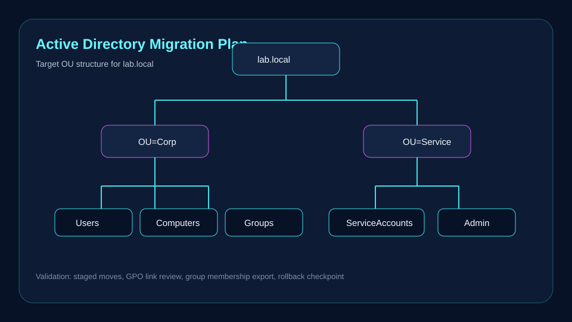

Make identity changes easier to target, validate, and reverse.
Separate users, computers, and service accounts so policy targeting, delegation, troubleshooting, and rollback planning can be reviewed clearly.
Case Study
A preserved identity and access case study for OU planning, GPO scope review, migration awareness, rollback preparation, and validation documentation.

Executive Summary
This case study documents Active Directory-style OU restructuring and identity access planning as sanitized lab documentation. It focuses on supportable change sequencing rather than unsupported enterprise migration claims.
Separate users, computers, and service accounts so policy targeting, delegation, troubleshooting, and rollback planning can be reviewed clearly.
Technical Environment
The documented environment is an Active Directory-style lab planning context. It does not expose private domain names, credentials, user identities, or production directory data.
Architecture Overview
The evidence maps OU structure, identity migration flow, coexistence planning, access boundaries, and rollback awareness. It is useful for demonstrating how identity changes should be planned before objects are moved.
Implementation Approach
The change record calls for defining top-level OUs, documenting intended GPO scope, exporting or recording current layout, moving a small lab test set first, and isolating service accounts from standard user policy assumptions.
Confirm test objects appear in the intended OU, verify expected GPO scope with lab-safe review methods, confirm no unintended policy applies to service accounts, and preserve rollback steps before broader changes.
Identity evidence becomes more credible when scope, policy impact, test objects, validation criteria, and rollback records are kept together.
Related Evidence
Sanitized OU planning, GPO scope, rollback, and validation notes.
Open EvidenceVisual identity architecture and migration planning context.
Open DiagramAdjacent automation change record connected to account provisioning review.
Open Change LogPowerShell artifact with parameter and dry-run review context.
Open Script{kind=link}